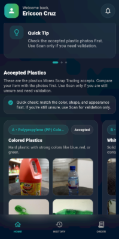
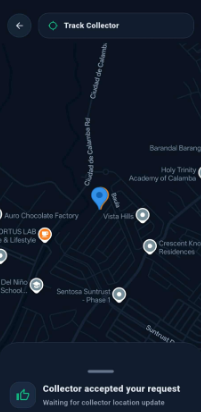
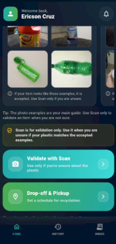
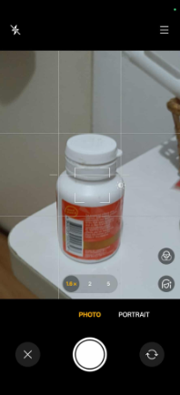
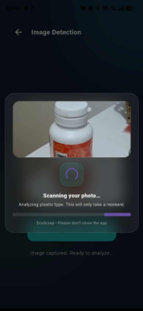
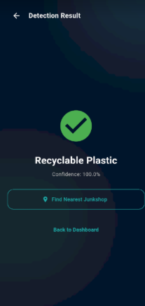
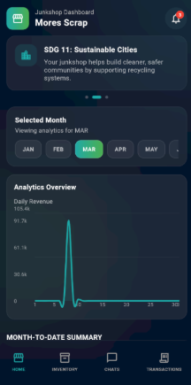
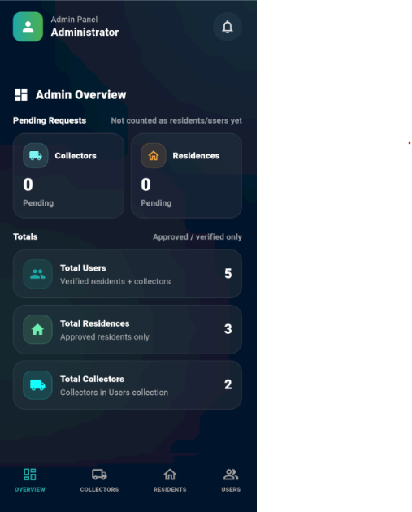
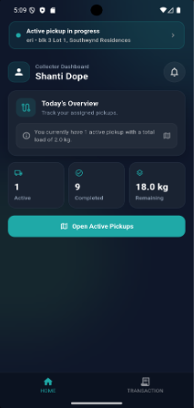

Background
EcoScrap was developed by a team of three. As a major contributor, I led the project’s conceptual planning and architectural design, ensuring a robust, scalable foundation for the platform.
My Contribution
As the Lead Developer, I architected a high-availability ecosystem for waste management. My key contributions include:
- Logistics Engine: Engineered a real-time reactive logistics system to optimize vehicle routing and collection efficiency using Google Maps API.
- Computer Vision: Developed an end-to-end ML pipeline using TensorFlow Lite and MobileNet for on-device waste classification, significantly reducing cloud dependency.
- Security & Infrastructure: Implemented AES-256 encryption at the data layer to ensure PII compliance and architected a microservices-based backend with Node.js.
Residence Dashboards

User Home & Stats: Central hub featuring real-time recycling analytics and impact visualization.

Request Pickup: Robust scheduling interface utilizing geolocation and automated waste categorization.

Live Map Tracking: Real-time vehicle synchronization providing accurate ETAs for residence pickups.
AI Detection Pipeline

AI Camera Feed: Integrated ML Kit for high-speed object detection with real-time UI overlay.

Normalization: Pre-processing pipeline that optimizes images for MobileNet inference accuracy.

Classification Result: Provides immediate feedback, confidence thresholds, and disposal instructions.
Operational Dashboards

Junkshop Inventory: Dashboard for tracking material volume, inventory fluctuations, and vendor logs.

Admin Console: Administrative control center for system-wide health and user governance.

Collector Route Panel: Command center for managing daily routes, navigation, and service fulfillment.